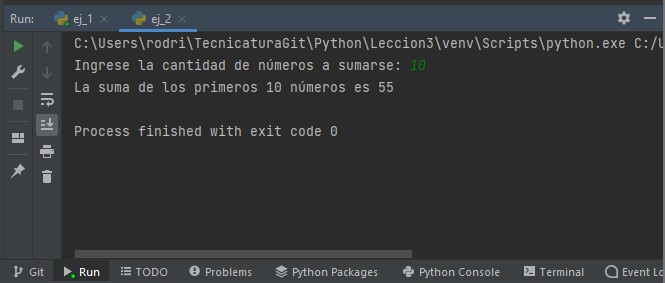
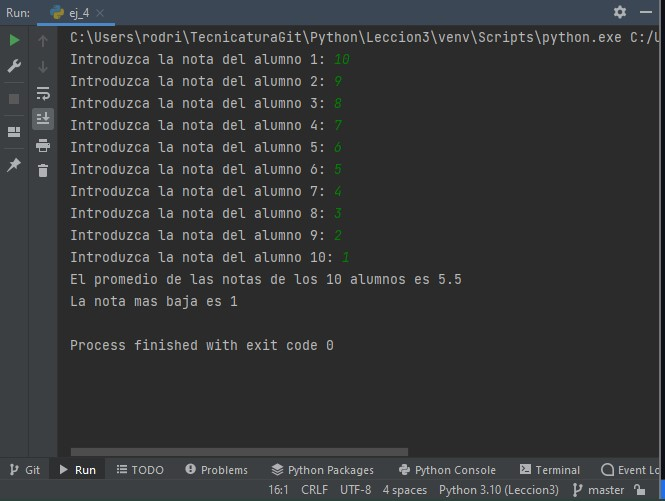

Clase miercoles 15 de junio.
Diseñar un programa que ingresando un año, nos devuelva por consola si es un año bisiesto o no, repetir la acción hasta que el usuario lo decida.
print('Comprobamos que año es bisiesto')
opcion = 1
while opcion == 1:
anio = int(input('Ingrese el año: '))
if ((anio % 4 == 0) and (anio % 100 != 0)) or (anio % 400 == 0):
print(f'{anio} es un año bisiesto')
else:
print(f'{anio} no es un año bisiesto')
opcion = int(input('Si desea seguir ingresando años presione 1: '))
Calcular la suma de "N" primeros números
n = int(input('Ingrese la cantidad de números a sumarse: '))
suma = 0
i = 0
while i <= n:
suma = suma + i
i += 1
print(f'La suma de los primeros {n} números es {suma}')

Leer 10 números e imprimir cuantos son positivos, cuantos negativos y cuantos neutros.
positivos = 0
negativos = 0
neutros = 0
for i in range(10):
num = int(input('Ingrese un número: '))
if num > 0:
positivos += 1
elif num < 0:
negativos += 1
elif num == 0:
neutros += 1
print(f'La cantidad de números positivos es {positivos}')
print(f'La cantidad de números negativos es {negativos}')
print(f'La cantidad de números neutros es {neutros}')

Suponga que se tiene un conjunto de calificaciones de un grupo de 10 alumnos. Realizar un algoritmo para calcular la calificación promedio y la calificación más baja de todo el grupo.
total = 0
nota_baja = 100
for i in range(10):
nota = int(input(f'Introduzca la nota del alumno {i+1}: '))
total = total + nota
if nota <= nota_baja:
nota_baja = nota
promedio = total / 10
print(f'El promedio de las notas de los 10 alumnos es {promedio}')
print(f'La nota mas baja es {nota_baja}')
